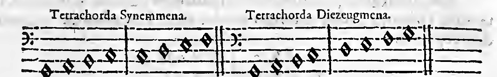

Chapter X: Tetrachords and the Six Solmization Syllables (Ut, Re, Mi, Fa, Sol, La)¶
Chapter X.
On Tetrachords and the use of the syllables Ut, re, mi, fa, sol, la.
It was customary among the ancients to divide the System of the octave into two tetrachords, and that in different ways according to the different purpose of musicians. For either they were conjunct, called Synemmena, with one intermediate sound established which made a fourth both with the lowest below and with the highest above—so that the extremes made a dissonant interval, a seventh [Dihepta], and above it one tone was understood to be added: for as often as the order required striking the octave a, they struck the first A, as if sounding an identical pitch from the opposite side, an antiphon [ἀντίφωνον]. In this way there were not truly two tetrachords, but two intervals of a fourth and one heptachord. Or the tetrachords were disjunct by the interval of one major tone, called Diezeugmena, which the very nature of things persuades even in our division of the System, in which the lower tetrachord has G, A, ♮, c, and the upper d, e, fe, g, where a major tone intervenes between c and d. Perhaps even by their very position the four lowest strings were separated from the four upper ones, a greater gap being left between the two boundary strings.


The reason that led them to think about the System of the tetrachord was this: they saw that in one consonance of a fourth there are two and a half tones; and we have a major tone, a minor tone, and a semitone in the perfect fourth—in the minor consonance, namely (for $4:5$ and $5:5$ [i.e., thirds] were not even held to be consonances)—all concinnous elements; and the semitone indeed either in the lowest place, or in the middle, or in the highest. Every song, therefore, seemed to them to be comprehended by three forms of tetrachords.
[Musical example: Tone, Tone, Semitone | Tone, Semitone, Tone | Semitone, Tone, Tone.]
For me, the forms of tetrachords are multiplied because of the distinction between the minor and major tones; for instead of three, six arise, and in one octave most are doubled; thus we also have the vote of Nature for distinguishing the tetrachords, for the upper is to the lower some-
f. 0146 · p. 56what similar in the disposition of the elementary intervals.
Form |
Strings |
Below — Middle — Above |
|---|---|---|
First form |
in c d e f / G A ♮ c |
Major tone, minor, semitone |
Second form |
in b c d de / d e fe g |
Minor tone, major, semitone |
Third form |
in c d de f / G A b c |
Major tone, semitone, minor |
Fourth form |
in ♮ c d e |
Semitone, major tone, minor |
Fifth form |
in A ♮ c d / d e f g |
Minor tone, semitone, major |
Sixth form |
in A b c d / d de f g |
Semitone, minor tone, major |
And these are only the forms of the perfect fourth: of the imperfect ones we shall treat in Chapter XII.
If, however, we ignore the difference of the major and minor tone, as instrumentalists do, then these disjunct tetrachords in succession are altogether similar:
G A ♮ c and d e fe g
G A b c and d e f g (These lowest and those highest.)
On both sides the semitone is in the same place, either highest or middle, with only this difference: that the semitone is one comma higher in the lower tetrachord than in the upper; which difference is scarcely perceived in singing.
Upon this likeness of tetrachords, then, rests the transposition of song from key to key customary among musicians; all the easier because instrumentalists have done away with the distinction between major and minor tones, and so forth.
Again, this likeness of tetrachords and their threefold variety brought forth in more recent music those six syllables ut, re, mi, fa, sol, la, by which the memory of learners is assisted. For if only a single octave were sung, composed of two similar tetrachords, we could be content with four syllables alone, ut, re, mi, fa, ut, re, mi, fa, ignoring the distinction between major and minor tones.
But since there are three places for the semitone in a tetrachord, lest these syllables should be too general, and rather so that the semitone might always be denoted by Mi Fa or Fa Mi, it was necessary for two other syllables to be added, so that in [Ut, re, mi, fa] the semitone would be in the highest place, in [Re, mi, fa, sol] in the middle place, and finally in [Mi, fa, sol, la] in the lowest place. And this is the reason why the inventors of music used six syllables,
f. 0147 · p. 57not eight. Therefore let that Belgian who instead of six made seven—Bo, ce, di, ga, lo, ma, ni—consider what profit he derives from this addition. For if he judged that voices should be used in a number equal to the strings of one octave, minus one, so that the octave on account of identity might be represented by the first syllable Bo: what, pray, does he find lacking in the letters a, b, c, d, e, f, g long since received into this use?
Since, therefore, six syllables have been born in this way on account of the threefold form of the tetrachord, thence has arisen the doctrine of Mutations through the modern musical scale—a doctrine which is occupied solely with fitting these syllables to the letters explained above, and shows that the superfluous syllables Sol, la are sometimes equivalent to the first ut, re, and sometimes to the succeeding Re, mi, so that occasionally out of order and without mutation fa can be brought in after sol, la.
1, 2, 3, 4, 5, 6, 7, 6 — Ut, re, mi, fa, sol, la, fa, la / Ut, re, mi, ut, re, mi, fa, mi
There is also another, dissimilar likeness of tetrachords, the foundation of the assimilation of diverse melodies sounding together, which they are wont to call Fugues and Fantasies. For if you take contiguous tetrachords, separated from each other by no interval—just as a major tone remained over to fill the octave above or below—in certain Systems of the octave the same series of elementary intervals, that is, of semitones, dieses, and limmata, will occur on both sides; and a major tone is assumed next to one of them so that instead of a fourth a fifth is made, in a manner similar to the other fourth; and two melodies, one earlier in time running through the interval of a fifth above, and the other later in time running through the interval of a fourth below, the later following the earlier and, so far as is permitted, imitating its pattern as a kind of rival.
[Musical example: Similar tetrachords — Upper (Minor tone, Semitone, Major tone), Lower (Minor tone, Semitone, Major tone), Adjoined tone.]